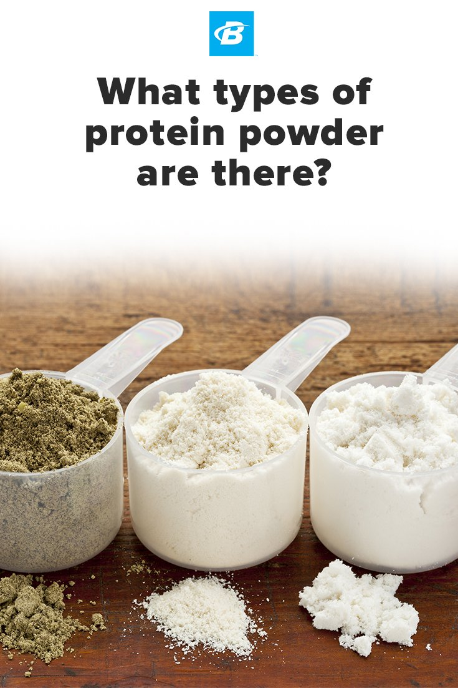

Serial No. |
Image |
Facts |
1 |
 |
Protein is essential for the following things: • Balanced PH levels in the bloodstream • Preserves muscle tissue during dieting or fasts • An energy source if carbs are not readily available • Required for chemical reactions in the body • Keeps the immune system healthy • Regulates the fluid balance in the body • PROTEIN IS KEY TO A STRONG BODY Source: Muscle & Strength
|
2 |
|
Protein powders are powdered forms of protein that come from plants (soybeans, peas, rice, potatoes, or hemp), eggs, or milk (casein or whey protein). The powders may include other ingredients such as added sugars, artificial flavoring, thickeners, vitamins, and minerals. The amount of protein per scoop can vary from 10 to 30 grams. Supplements used for building muscle contain relatively more protein, and supplements used for weight loss contain relatively less. |
3 |
|
What are the risks?
There are numerous risks to consider when using a protein powder. Among them:
A protein powder is a dietary supplement. The FDA leaves it up to manufacturers to evaluate the safety and labeling of products. So, there's no way to know if a protein powder contains what manufacturers claim.
We don't know the long-term effects. "There are limited data on the possible side effects of high protein intake from supplements," McManus says.
It may cause digestive distress. "People with dairy allergies or trouble digesting lactose [milk sugar] can experience gastrointestinal discomfort if they use a milk-based protein powder," McManus points out. |
4 |
 |
It may be high in added sugars and calories. Some protein powders have little added sugar, and others have a lot (as much as 23 grams per scoop). Some protein powders wind up turning a glass of milk into a drink with more than 1,200 calories. The risk: weight gain and an unhealthy spike in blood sugar. The American Heart Association recommends a limit of 24 grams of added sugar per day for women and 36 grams for men. |